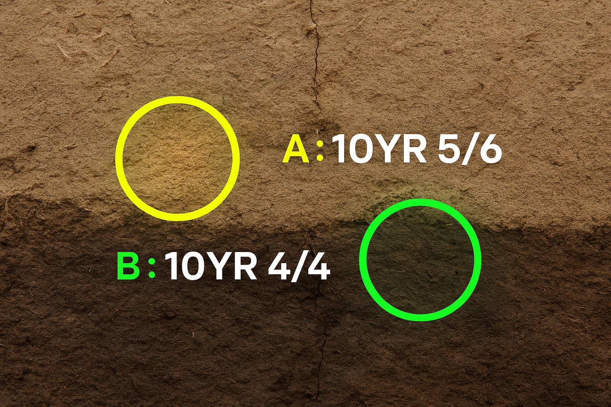

DirtLENS is a compact, handheld device that helps archaeologists capture soil data in the field. It logs real-time color and GPS coordinates to support rapid data collection. All information is formatted for easy export and is erased after each scan to maintain data security and speed.